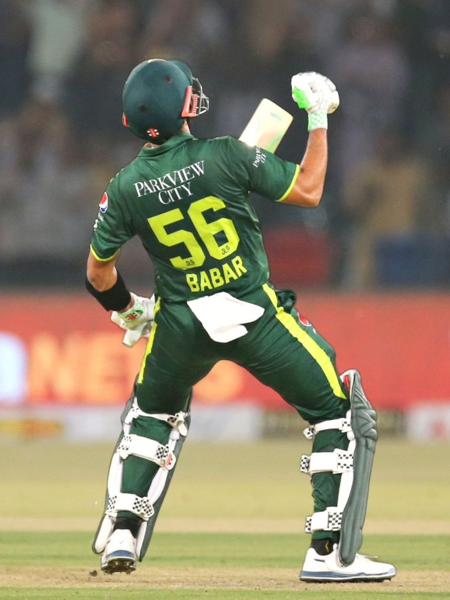

Cricket is a bat-and-ball sport that originated in England and has grown into one of the most popular games worldwide, especially in countries like India, Australia, Pakistan, and South Africa. Played between two teams of eleven players each, cricket is more than just a game—it’s a cultural phenomenon that brings people together across continents. The sport is played in various formats, including Test matches, One Day Internationals (ODIs), and Twenty20 (T20), each offering a unique blend of strategy, endurance, and excitement. Whether in packed stadiums or neighborhood parks, cricket’s universal appeal lies in its blend of tradition, competition, and community spirit.
The rules of cricket are governed by the Marylebone Cricket Club (MCC) and include 15 core laws that ensure fair play. The game begins with a toss to decide which team bats or bowls first. The batting team aims to score runs by hitting the ball and running between two wickets, while the bowling team tries to dismiss batters through methods like bowled, caught, or run out. Each innings consists of a set number of overs—six legal balls per over—and the team with the most runs at the end wins. Fielding positions, pitch dimensions, and equipment like the cricket bat and ball are all standardized. Formats differ in duration: Test matches last up to five days, ODIs are 50 overs per side, and T20s are 20 overs per side, making the game accessible to both purists and casual fans.
Did You Know? 🏏
- The longest cricket match in history lasted 12 days.
- The fastest ball ever bowled was 161.3 km/h by Shoaib Akhtar.
- Cricket originated in England over 400 years ago.
- A cricket ball is made of layers of cork and tightly wound string.
- Sachin Tendulkar has the most international runs in cricket history.
In conclusion, cricket is a sport that combines physical skill, mental strategy, and deep-rooted tradition. Its structured rules and diverse formats allow for thrilling contests and dramatic moments, whether in international tournaments like the Cricket World Cup or local club matches. As cricket continues to evolve with innovations like the Decision Review System (DRS) and franchise leagues like the IPL, its global reach and cultural significance only grow stronger. For newcomers and seasoned fans alike, understanding the rules and rhythm of cricket opens the door to a rich and rewarding sporting experience.